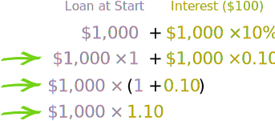
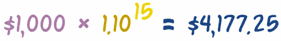
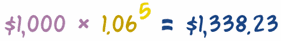
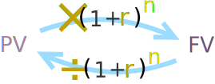

Compound Interest Formula Derivations
Showing how the formulas are worked out, with Examples!
With Compound Interest we work out the interest for the first period, add it to the total, and then calculate the interest for the next period, and so on ..., like this:

Make A Formula
Let's look at the first year to begin with:
$1,000.00 + ($1,000.00 × 10%) = $1,100.00
We can rearrange it like this:

So, adding 10% interest is the same as multiplying by 1.10
(Note: the Interest Rate was turned into a decimal by dividing by 100: 10% = 10/100 = 0.10, read Percentages to learn more.)
And that formula works for any year:
- We could do the next year like this: $1,100 × 1.10 = $1,210
- And then continue to the following year: $1,210 × 1.10 = $1,331
- etc...
So it works like this:

In fact we could go straight from the start to Year 5 if we multiply 5 times:
$1,000 × 1.10 × 1.10 × 1.10 × 1.10 × 1.10 = $1,610.51
But it is easier to write down a series of multiplies using Exponents (or Powers) like this:
The Formula
We have been using a real example, but let us make it more general by using letters instead of numbers, like this:

(Compare this to the calculation above it: PV = $1,000, r = 0.10, n = 5, and FV = $1,610.51)
- When the interest rate is annual, then n is the number of years
- When the interest rate is monthly, then n is the number of months
- and so on
Examples
How about some examples ...
... what if the loan went for 15 Years? ... just change the "n" value:

... and what if the loan was for 5 years, but the interest rate was only 6%? Here:

(Note that it is 1.06, not 1.6)
The Four Formulas
So, the basic formula for Compound Interest is:
FV = PV (1+r)n
- FV = Future Value,
- PV = Present Value,
- r = Interest Rate (as a decimal value), and
- n = Number of Periods
With that we can work out the Future Value FV when we know the Present Value PV, the Interest Rate r and Number of Periods n
And we can rearrange that formula to find FV, the Interest Rate or the Number of Periods when we know the other three.
Here are all four furmulas:
| FV = PV (1+r)n | Find the Future Value when we know a Present Value, the Interest Rate and number of Periods. | |
| PV = FV / (1+r)n | Find the Present Value when we know a Future Value, the Interest Rate and number of Periods. | |
| r = ( FV / PV )1/n - 1 | Find the Interest Rate when we know the Present Value, Future Value and number of Periods. | |
| n = ln(FV / PV) ln(1 + r) | Find the number of Periods when we know the Present Value, Future Value and Interest Rate |
How did we get those other three formulas? Read On!
Working Out the Present Value
Example: Sam wants to reach $2,000 in 5 Years at 10% annual interest. How much should Sam start with?
In other words, we know a Future Value, and want to know a Present Value.
We can just rearrange the formula to suit ... dividing both sides by (1+r)n to give us:
So now we can calculate the answer:
Example (continued):
PV = $2,000 / (1+0.10)5 = $2,000 / 1.61051 = $1,241.84
So Sam should start with $1,241.84
It works like this:

Another Example: How much do you need to invest now, to get $10,000 in 10 years at 8% interest rate?
PV = $10,000 / (1+0.08)10 = $10,000 / 2.1589 = $4,631.93
So, $4,631.93 invested at 8% for 10 Years grows to $10,000
Working Out The Interest Rate
Example: Sam has only $1,000, and wants it to grow to $2,000 in 5 Years, what interest rate should Sam be looking for?
We need a rearrangement of the first formula to work it out:
(Note: to understand the step "take nth root" please read Fractional Exponents)
The result is:
r = ( FV / PV )1/n − 1
Now we have the formula, it is just a matter of "plugging in" the values to get the result:
Example (continued):
r = ( $2,000 / $1,000 )1/5 − 1
= ( 2 )0.2 − 1
= 1.1487 − 1
= 0.1487
And 0.1487 as a percentage is 14.87%
So Sam needs 14.87% to turn $1,000 into $2,000 in 5 years.
Another Example: What interest rate do you need to turn $1,000 into $5,000 in 20 Years?
r = ( $5,000 / $1,000 )1/20 − 1 = ( 5 )0.05 − 1 = 1.0838 − 1 = 0.0838
And 0.0838 as a percentage is 8.38%. So 8.38% will turn $1,000 into $5,000 in 20 Years.
Working Out How Many Periods
Example: Sam can only get a 10% interest rate. How many years will it take Sam to get $2,000?
When we want to know how many periods it takes to turn $1,000 into $2,000 at 10% interest, we can rearrange the basic formula.
But we need to use the natural logarithm function ln() to do it.
(Note: to understand the step "use logarithms" please read Working with Exponents and Logarithms).
Now let's "plug in" the values:
Example (continued):
n = ln( $2,000 / $1,000 ) / ln( 1 + 0.10 ) = ln(2)/ln(1.10) = 0.69315/0.09531 = 7.27
Magic! It will need 7.27 years to turn $1,000 into $2,000 at 10% interest.
Poor Sam will have to wait over 7 years.
Another Example: How many years to turn $1,000 into $10,000 at 5% interest?
n = ln( $10,000 / $1,000 ) / ln( 1 + 0.05 ) = ln(10)/ln(1.05) = 2.3026/0.04879 = 47.19
47 Years! But we are talking about a 10-fold increase, at only 5% interest.
Conclusion
Knowing how the formulas are derived and used makes it easier for you to remember them, and to use them in different situations.